A Voice Between
Worlds
Mehmet Polat is a master ud player, composer, ensemble leader and soloist who tours internationally. From Africa to India, Persia to the Balkans, Contemporary to Jazz, he has been combining various musical genres with his Alevi Spiritual, Anatolian Folk and Ottoman classical music background.
Through his improvisations, compositions and his own take on a variety of musical styles, Mehmet is constantly searching for new musical paths and inspiration. After many years of research, he invented his own left-hand technique to advance beyond the limitations of his traditional instrument — enabling more advanced and modern pieces.
He has also designed a ud with two extra bass strings to broaden the range and function of his instrument, a testament to his lifelong commitment to evolving the art form while honoring its ancient roots.
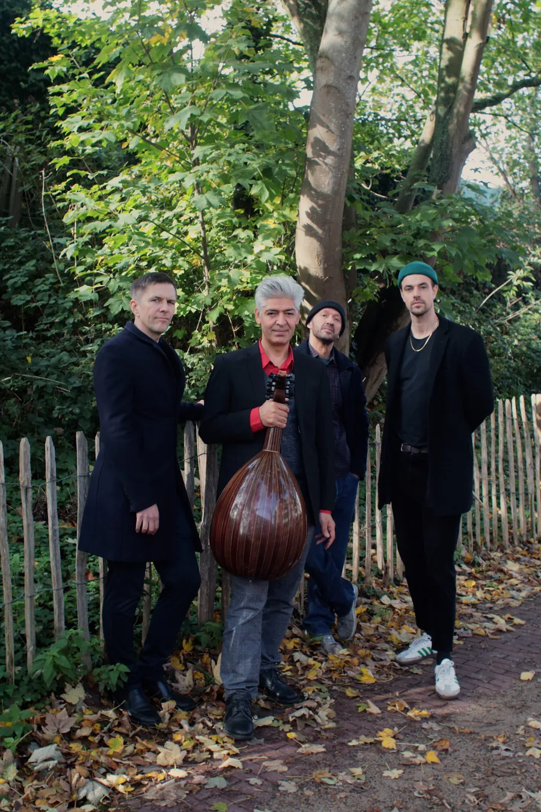
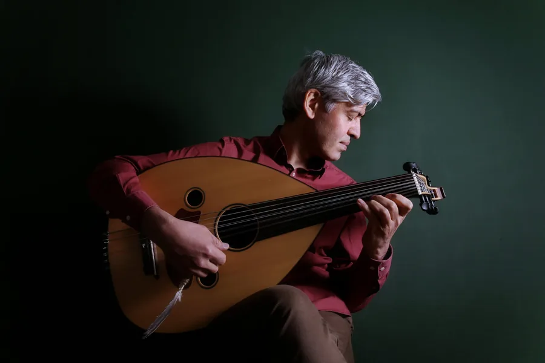
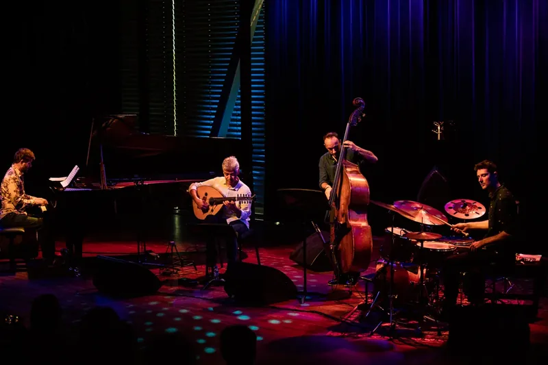
Mehmet Polat is a wonderful musician: an open eye and ear for everything and everyone...
Dani Heyvaert — Rootstime.be
The Quartet
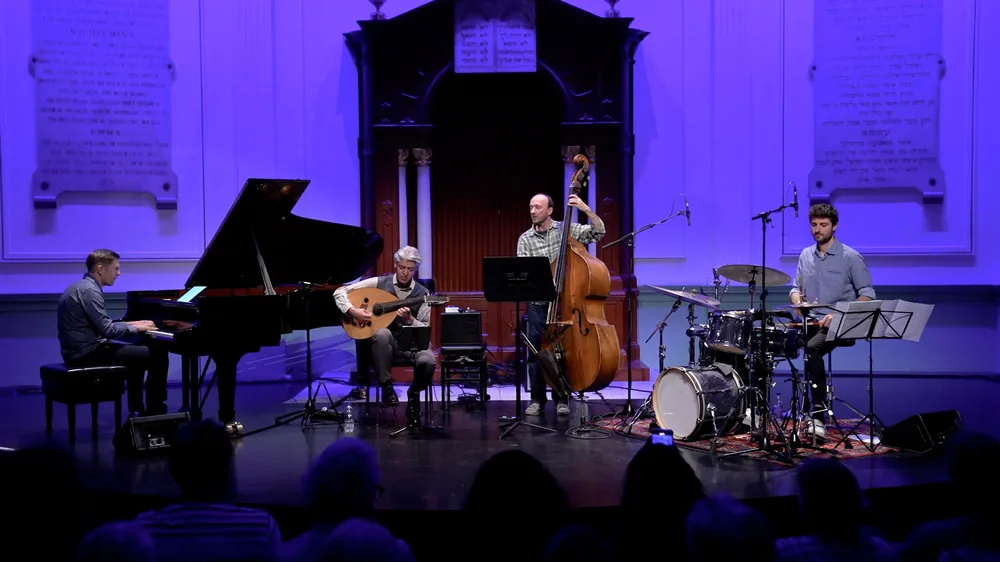
Mehmet Polat Quartet
Ud player and composer Mehmet Polat brings on board three virtuosos of jazz and world music to form his quartet — a group that blends jazz with rich musical traditions spanning the Middle East, Africa, India, Europe, and the Balkans.
The crossover-inspired compositions spring into existence through contemplation, experiments, emotions, adventure and virtuosity. Polat finds freedom in complex 'odd meters' like 5/4, 7/4 and 9/8 found in non-Western music, creating a sonic landscape where East and West dissolve into each other.
Seven Albums of
Musical Journeys
From the debut trio album Next Spring to the latest Roots in Motion, each record represents a chapter in a lifelong exploration of music without borders.
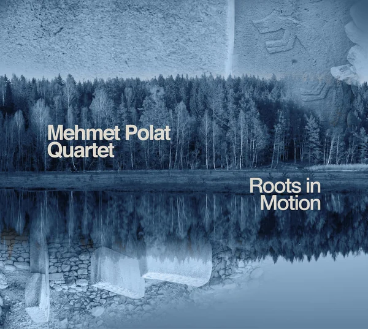
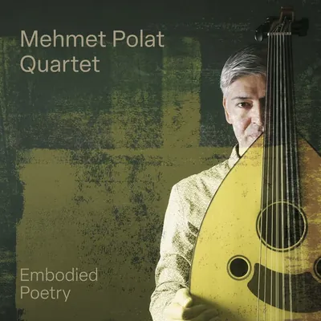
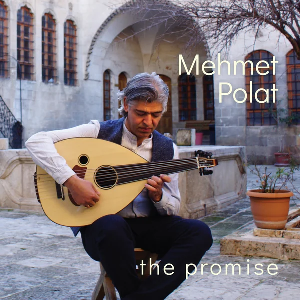
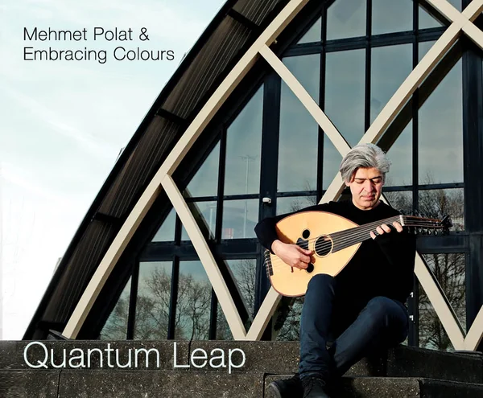
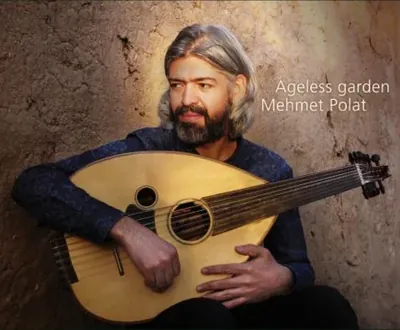
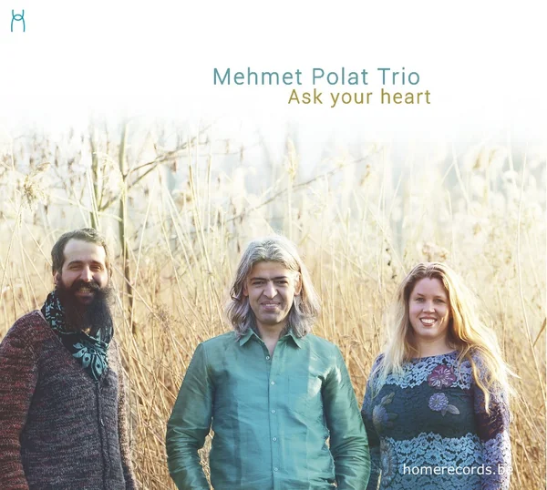
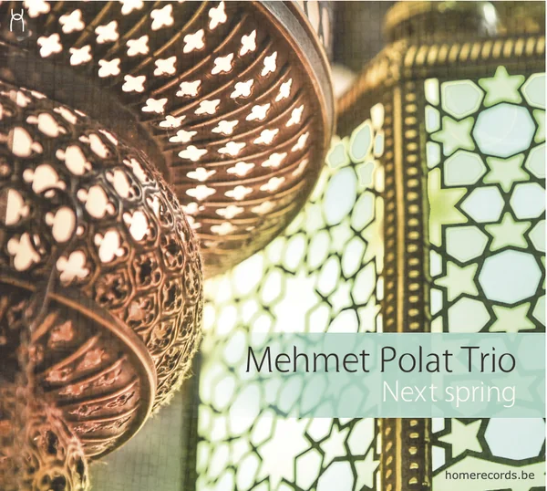
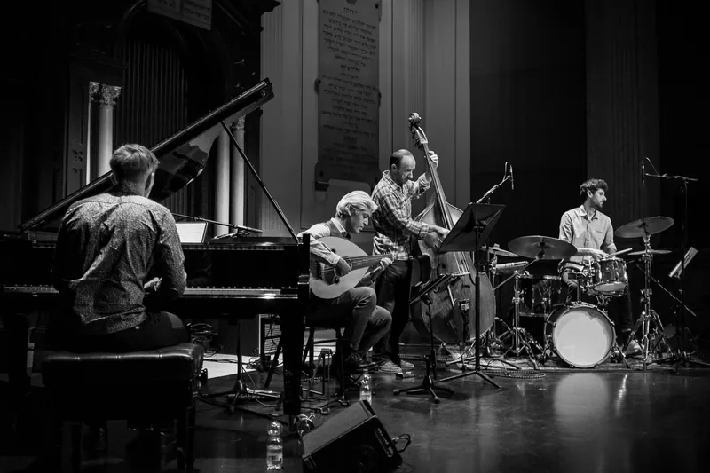
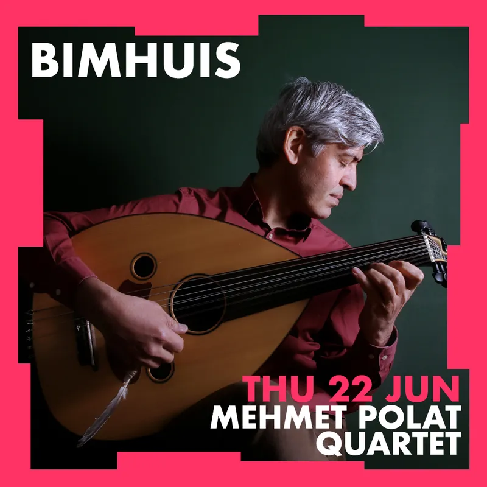
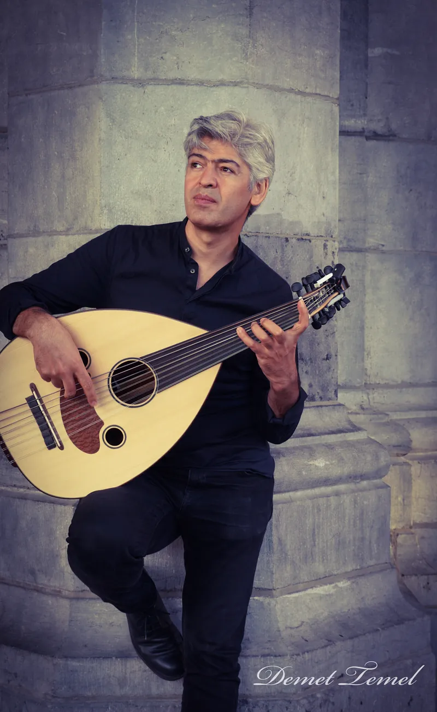
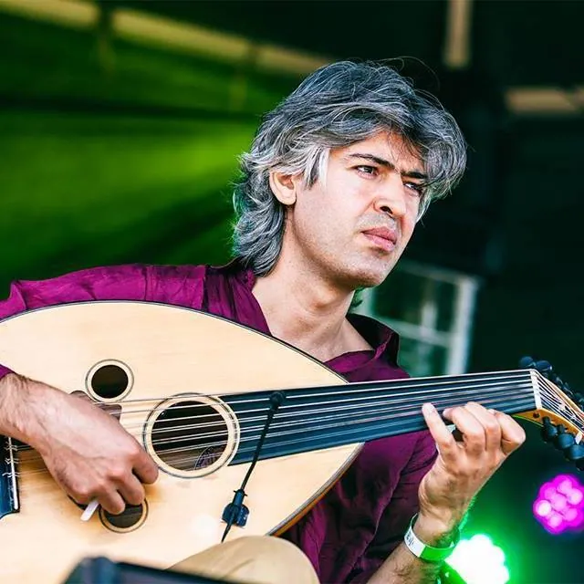
Concerts & Tour Dates
Mehmet Polat performs internationally — from intimate jazz clubs to major festivals across Europe and beyond.
Loading events…
What the World Says
Over 100 reviews from press worldwide — from New York to Tokyo, Amsterdam to Ankara.
Mehmet Polat is a masterful interpreter of all that is human and alive.
Dani Heyvaert — Rootstime.be
An intense and richly textured journey where oud meets jazz, rhythm meets nuance, and tradition meets fearless invention.
Lira Musikmagasin — Sweden
Meticulous interplay, striking tunes and a fascinatingly unorthodox lineup of instruments make this one of the best albums of the year.
New York Music Daily — USA
Cultures meet, new music emerges and a small miracle happens — the music seems timeless and breathtakingly beautiful.
Moors Magazine — Belgium
It’s a perfect balance between traditions and innovation, with full respect for the different musics involved and deep knowledge of them.
Francesco Martinelli — Italy
It is amazing to contemplate how Polat continually presents himself with all manner of musical challenges, cultural collages, and emotional labyrinths, and executes the music with masterful ease.
DooBeeDooBeeDoo — New York, USA
Book &
Connect
Available for concerts, festivals, collaborations, workshops and masterclasses. Touring internationally throughout Europe and beyond.
Send a Message
Download Photos


Press Kit
Download the Electronic Press Kit and Technical Rider for booking and programming.